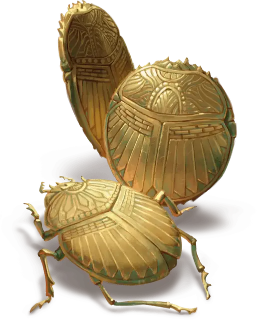

Сокровищный скарабей
Hoard Scarab
Крошечный Монстр, без мировоззрения

Класс Доспеха 14 (природный доспех)
Хиты 7 (3к4)
Скорость 20 футов, летая 20 футов, копая 20 футов
| мод | спас | ||
|---|---|---|---|
| СИЛ | 4 | −3 | −3 |
| ЛОВ | 16 | +3 | +3 |
| ТЕЛ | 11 | +0 | +0 |
| мод | спас | ||
|---|---|---|---|
| ИНТ | 3 | −4 | −4 |
| МДР | 8 | −1 | −1 |
| ХАР | 6 | −2 | −2 |
Чувства тёмное зрение 60 футов, пассивное Восприятие 9, чувство вибрации 60 футов
Опасность 1/8 (25 опыта)
Бонус мастерства +2
Особенности
Обманчивая внешность. Если скарабей неподвижен в начале боя, он имеет преимущество в броске инициативы. Более того, если существо не наблюдало за движением или действием скарабея, это существо должно преуспеть в проверке Интеллекта (Расследование) Сл 18, чтобы определить, что скарабей является одушевленным.
Действия
Укус. . Рукопашная атака оружием: +5 к попаданию, досягаемость 5 футов, одна цель. Попадание: 5 (1к4+3) колющего урона. Если целью является существо, оно получает помеху на броски атаки до начала своего следующего хода.
Бонусные действия
Распыление (1/день). Скарабей выпускает волшебную сверкающую пыль из своих крыльев. Каждое существо в пределах 5 футов от скарабея должно преуспеть в спасброске Ловкости Сл 13, иначе становится подсвеченным синим светом на 10 минут. Будучи подсвеченным таким образом, существо испускает тусклый свет в радиусе 10 футов и не может получать преимущества от того, что оно невидимо. Кроме того, каждый Дракон в радиусе 1 мили от существа узнает о нём и может безошибочно отследить его. Наложение заклинания рассеивание магии [dispel magic] на существо оканчивает этот эффект.
Описание
Сокровищный скарабей - это существа, похожие на жуков, которые благодаря какой-то естественной адаптации или алхимической изобретательности идеально вписываются в груды золотых монет. Они питаются крошечными клещами, которые заражают чешую и логово дракона, и их болезненный укус может быть сильным сдерживающим фактором для потенциальных похитителей сокровищ.
Сокровищные скарабеи также выделяют из своих крыльев блестящую металлическую пыль, которая покрывает незваных гостей, которые подходят к ним слишком близко. Магия этой пыли позволяет драконьему владельцу логова чувствовать местоположение злоумышленников, когда они перемещаются по логову.